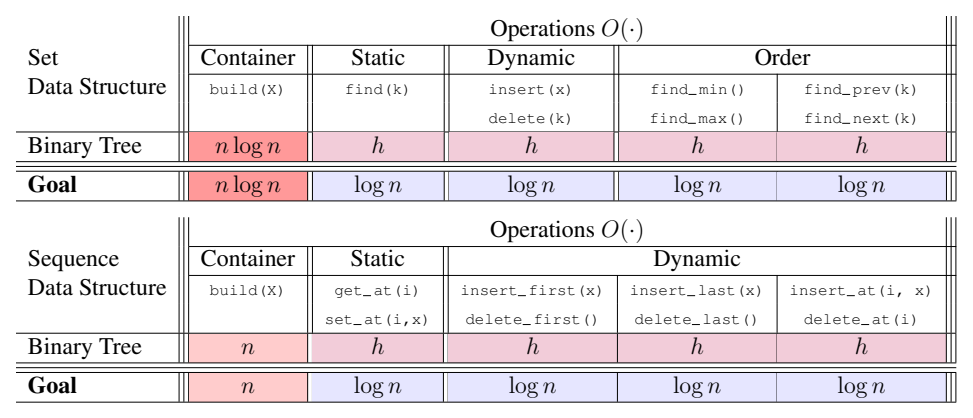
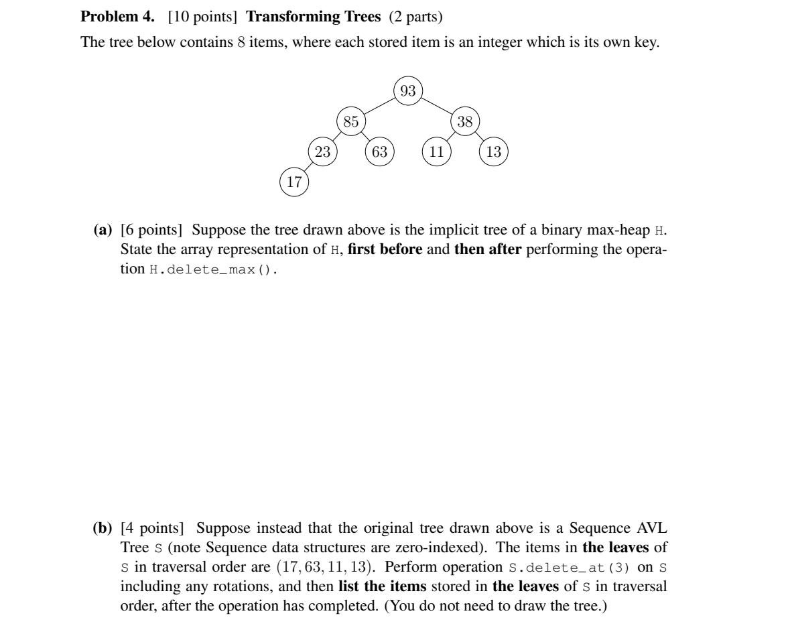

Exam Cram Coach
期末极速备考教练 · free and open source
Drop your course folder on a coding agent. It teaches from your own slides with page citations, shows the figures, quizzes you with your own homework and past papers, and remembers where you stopped.
npx skills add ZeKaiNie/universal-examprep-skill
pip install pypdfium2Works in Claude Code, Codex, Cursor, Windsurf, Antigravity, Gemini CLI, GitHub Copilot and other agents that can run a shell. Reads PDF, PPTX, DOCX, Markdown, TXT and HTML. English and Chinese.
What it does
Teaches chapter by chapter
Splits the course into chapters and explains each slice in plain words, citing file p.N for every fact.
Shows the figures
Crops diagrams from lecture pages and printed questions and solutions, and puts them in the chat while it explains.
Quizzes from your homework
Pairs hw2.pdf with hw2solutions.pdf and “Problem 1.3.10” with its solution. Only real questions are used.
Never hides what it made up
🟢 from your materials · 🟡 AI supplement · ⚠️ AI-generated answer. If the materials don't cover it, it says so.
Remembers across chats
Progress, mistakes, notes and a day-by-day plan live in a local folder. A new chat continues where you stopped.
Small, offline, safe
13 files, no API key, no network. Course text is treated as data: lines aimed at the AI are flagged, never followed.
What a session looks like
Chapter 1: Set Theory
🟢 Union A ∪ B: everything in A or in B or in both — on a Venn diagram, the whole area both circles cover. (ch01.pdf p.4)
[the Venn diagram cropped from ch01.pdf p.4 appears here]
🟢 Partition: sets that are mutually exclusive and collectively exhaustive. (ch01.pdf p.9)
📍 ch 1/9 Experiments, Models, an… · part 1/8 · quiz 0/0 · 0/9 chapters done · 0 open mistakes · 3 day(s) to exam → python coach.py next


Install
Any agent
npx skills add ZeKaiNie/universal-examprep-skillPick your agents when asked. Add -g to install for your user.
Claude Code plugin
/plugin marketplace add ZeKaiNie/universal-examprep-skill
/plugin install universal-exam-cram-coach@exam-cram-coachOffline
Download universal-exam-cram-coach-flash.zip and SHA256SUMS.txt from the latest release and unzip into your agent's skills folder.
Then tell your agent: “Use the Exam Cram Coach skill. My materials are in D:\Courses\Probability, the exam is in 3 days, start from chapter 1.”
Measured on real courses
| Course | Files | Setup | Result |
|---|---|---|---|
| EEC 160 Applied Probability | 27 PDFs, 1,000 pages, scanned homework | 9 s | 9/9 chapters · 89/89 problems paired with solutions · 235 lecture figures |
| MIT 6.006 (OCW) | 8 PDFs | 1.4 s | 6/6 chapters · 9/9 quiz problems with official solutions |
| Yale PSYC 110 | 4 transcripts | 0.1 s | 4/4 chapters, retrieval hits the right lecture |
Gemini flash-lite, Gemini flash and Claude Haiku each ran setup → teach → quiz → check from the skill text alone, citing pages and embedding the figures without inventing commands. Details: weak-model test.
FAQ
Which agents does it work with?
Any coding agent with a shell: Claude Code, Codex, Cursor, Windsurf, Antigravity, Gemini CLI, GitHub Copilot and more.
Does it make up answers?
Every sentence carries a label, quizzes use only questions from your files, and when the materials don't cover a question the tutor says so.
Can it show the diagrams from my PDFs?
Yes: figures are cropped from lecture pages and printed questions and solutions during setup.
Does it upload my files?
No. It runs offline and writes only into a local exam-cram folder.
Does it work with small models?
Yes, it was tested with Gemini flash-lite, Gemini flash and Claude Haiku.